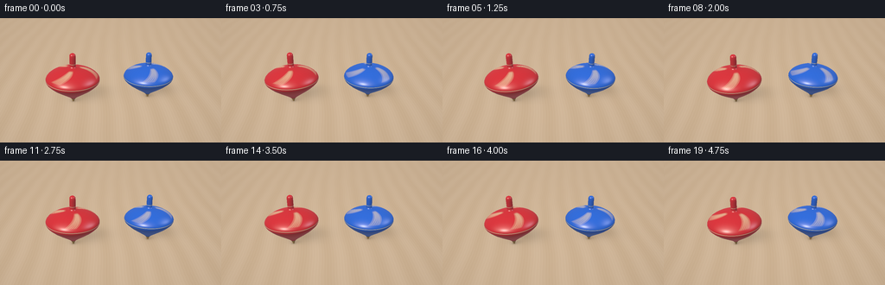
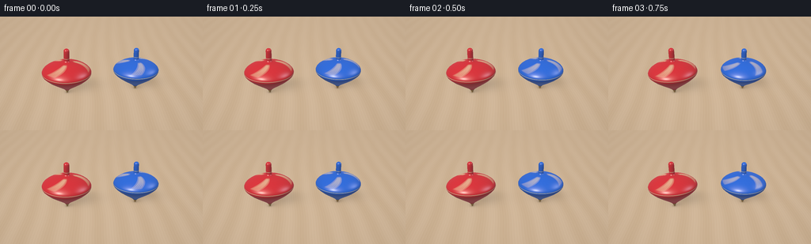

CODING AGENTS AS PIXEL WORLD MODELS
traex/GPT-6.1-Sol · instance_preservation_0038
点击播放 · 原生 RGB 像素
逐轮保存的候选
回放视频、检查图与代码变化。
每份候选均可单独播放。实际图片检查记录在下方工具轨迹中。
候选 01播放与检查图
点击播放 · 原生 RGB 像素


展开代码变化
--- 上一保存版本
+++ 本次保存版本
@@ -0,0 +1,219 @@
+"""Procedural RGB animation of two lacquered spinning tops.
+Pure numpy ray/lathe intersections and physically inspired shading; no render engine.
+"""
+from pathlib import Path
+import json
+import math
+import numpy as np
+from PIL import Image
+import artifact_io
+
+ROOT = Path(__file__).resolve().parent
+SPEC = json.loads((ROOT / 'task_spec.json').read_text())
+W, H, SS = SPEC['width'], SPEC['height'], 3
+RW, RH = W*SS, H*SS
+
+def normalize(x):
+ return x / np.maximum(np.linalg.norm(x,axis=-1,keepdims=True),1e-12)
+
+def smoothstep(a,b,x):
+ u = np.clip((x-a)/(b-a),0,1)
+ return u*u*(3-2*u)
+
+def srgb(x):
+ x=np.maximum(x,0)
+ return np.where(x<0.0031308,12.92*x,1.055*x**(1/2.4)-0.055)
+
+CAM=np.array([0.,-6.7,3.95])
+TARGET=np.array([0.,0.,.58])
+FWD=normalize(TARGET-CAM)
+RIGHT=normalize(np.cross(FWD,np.array([0.,0.,1.])))
+UP=np.cross(RIGHT,FWD)
+y,x=np.mgrid[:RH,:RW]
+focal=RH/(2*np.tan(np.deg2rad(25)/2))
+D=normalize(FWD+(x[...,None]+.5-RW/2)*RIGHT/focal-(y[...,None]+.5-RH/2)*UP/focal).reshape(-1,3)
+O=np.broadcast_to(CAM,D.shape)
+plane_t=-CAM[2]/D[:,2]
+P=O+plane_t[:,None]*D
+
+# Satin honey-oak tabletop: fine grain restrained enough not to compete with the toys.
+gx,gy=P[:,0],P[:,1]
+warp=.10*np.sin(gy*.47)+.018*np.sin(gy*2.7)
+grain_coord=gx+warp
+broad=np.sin(grain_coord*10+np.sin(gy*.25))
+fine=np.sin(grain_coord*91+1.6*np.sin(gy*.61))
+finer=np.sin(grain_coord*189+.7*np.sin(gy*1.1))
+wood=.019*broad+.007*fine+.003*finer
+wood*=np.exp(-np.maximum(gy-1,0)*.14)
+seam_dist=np.abs((gx+.7)%2.8-1.4)
+seam=np.exp(-(seam_dist/.009)**2)*.014
+BASE=np.array([.61,.45,.30])[None,:]+wood[:,None]-seam[:,None]
+BASE*= (1.00+.035*np.exp(-((gx+2)**2+(gy+1)**2)/15))[:,None]
+# Smooth, bright studio falloff.
+vig=1-.065*((x.reshape(-1)-RW/2)/(RW/2))**2-.04*((y.reshape(-1)-RH/2)/(RH/2))**2
+BASE*=vig[:,None]
+
+# Lathed profile, from small brass point to rounded wooden spindle.
+# Piecewise conic intersection is exact; normals are smoothly interpolated.
+profile=np.array([
+[0,.022],[.045,.035],[.095,.062],[.15,.12],[.25,.255],
+[.36,.405],[.46,.535],[.54,.620],[.59,.665],[.63,.683],
+[.67,.683],[.71,.665],[.75,.631],[.79,.580],[.83,.515],
+[.865,.443],[.895,.363],[.922,.273],[.942,.178],
+[.957,.103],[.972,.082],[1.02,.077],[1.10,.077],
+[1.20,.077],[1.27,.077],[1.30,.071],[1.325,.052],
+[1.338,.027],[1.342,0.001]])
+Z=profile[:,0]; R=profile[:,1]
+DR=np.gradient(R,Z)
+# Keep the crisp rim edges while rounding the dome and stem.
+
+LIGHT=normalize(np.array([-3.5,-4.5,7.0]))
+LIGHT2=normalize(np.array([4.5,1.0,3.8]))
+
+
+def rotation(wobble,precess):
+ # Local z axis gently precesses while the contact point stays on the table.
+ axis=normalize(np.array([wobble*np.cos(precess),wobble*np.sin(precess),1.]))
+ xx=normalize(np.cross(np.array([0.,1.,0.]),axis))
+ yy=np.cross(axis,xx)
+ return np.stack([xx,yy,axis],axis=1)
+
+
+def intersect(oo,dd):
+ n=len(dd)
+ best=np.full(n,np.inf)
+ hit_z=np.zeros(n)
+ hit_seg=np.zeros(n,dtype=np.int32)
+ # Intersect r(z)^2 = x^2+y^2 for each frustum.
+ rr=dd[:,0]**2+dd[:,1]**2
+ ro=oo[:,0]*dd[:,0]+oo[:,1]*dd[:,1]
+ r0=oo[:,0]**2+oo[:,1]**2
+ for i in range(len(Z)-1):
+ slope=(R[i+1]-R[i])/(Z[i+1]-Z[i])
+ intercept=R[i]-slope*Z[i]
+ q=slope*oo[:,2]+intercept
+ a=rr-(slope*dd[:,2])**2
+ b=2*(ro-q*slope*dd[:,2])
+ c=r0-q*q
+ disc=b*b-4*a*c
+ valid=disc>=0
+ root=np.sqrt(np.maximum(disc,0))
+ safe=np.where(np.abs(a)>1e-12,a,1e-12)
+ for sign in [-1,1]:
+ tt=(-b+sign*root)/(2*safe)
+ zz=oo[:,2]+tt*dd[:,2]
+ ok=valid & (tt>0) & (tt<best) & (zz>=Z[i]-1e-7) & (zz<=Z[i+1]+1e-7)
+ best[ok]=tt[ok]
+ hit_z[ok]=zz[ok]
+ hit_seg[ok]=i
+ return best,hit_z,hit_seg
+
+
+def texture(z,ang,phase,color,speed):
+ paint=np.broadcast_to(color,(len(z),3)).copy()
+ # Three swept ivory strokes on the upper dome make rotation legible.
+ # The principal identity remains a strong, saturated red / blue.
+ ivory=np.array([.83,.71,.42])
+ ink=np.zeros(len(z))
+ for exposure in [-.020,-.010,0,.010,.020]:
+ theta=ang-phase-speed*exposure
+ swirl=theta-2.7*(z-.78)
+ signed=np.arctan2(np.sin(3*swirl),np.cos(3*swirl))
+ width=.13+.20*smoothstep(.73,.92,z)
+ strokes=(1-smoothstep(width,width+.055,np.abs(signed)))
+ strokes*=smoothstep(.735,.765,z)*(1-smoothstep(.927,.946,z))
+ ink+=strokes/5
+ # Fine gold/ivory pinstripes around the broad shoulder and spindle.
+ ring=(1-smoothstep(.004,.010,np.abs(z-.657)))*.88
+ collar=(1-smoothstep(.003,.008,np.abs(z-1.064)))*.9
+ amount=np.maximum(ink,np.maximum(ring,collar))
+ paint=paint*(1-amount[:,None])+ivory*amount[:,None]
+ # Fine radial lacquer/wood texture, invisible at normal viewing distance.
+ detail=.007*np.sin(ang*31+z*54)+.004*np.sin(z*245)
+ paint*=1+detail[:,None]
+ brass=z<.098
+ paint[brass]=np.array([.46,.265,.068])
+ return paint,brass
+
+
+def draw_top(image,depth,pos,scale,rot,phase,color,speed):
+ center=pos+rot@np.array([0,0,.67*scale])
+ oc=CAM-center
+ b=D@oc
+ c=np.dot(oc,oc)-(1.03*scale)**2
+ mask=(b*b-c)>0
+ ids=np.flatnonzero(mask)
+ dd=(D[ids]@rot)/scale
+ oo=np.broadcast_to(((CAM-pos)@rot)/scale,dd.shape)
+ ts,z,segments=intersect(oo,dd)
+ ok=np.isfinite(ts)&(ts<depth[ids])
+ ids=ids[ok];ts=ts[ok];z=z[ok];segments=segments[ok];dd=dd[ok];oo=oo[ok]
+ lp=oo+ts[:,None]*dd
+ rad=np.maximum(np.linalg.norm(lp[:,:2],axis=1),1e-8)
+ slope=np.interp(z,Z,DR)
+ normal_local=normalize(np.stack([lp[:,0]/rad,lp[:,1]/rad,-slope],axis=-1))
+ normal=normal_local@rot.T
+ ang=np.arctan2(lp[:,1],lp[:,0])
+ albedo,brass=texture(z,ang,phase,color,speed)
+ view=-D[ids]
+ diffuse=np.maximum(normal@LIGHT,0)
+ fill=np.maximum(normal@LIGHT2,0)
+ facing=np.maximum(np.sum(normal*view,axis=1),0)
+ ambient=.24+.10*np.clip(normal[:,2],0,1)
+ # Slight occlusion where the spindle emerges from the body.
+ ambient*=1-.16*np.exp(-((z-.975)/.045)**2)
+ col=albedo*(ambient+.65*diffuse+.15*fill)[:,None]
+ half=normalize(view+LIGHT)
+ ndh=np.maximum(np.sum(normal*half,axis=1),0)
+ # Broad sheen underneath a tight lacquer highlight.
+ spec=.23*ndh**35+.48*ndh**180
+ spec*=diffuse
+ col+=spec[:,None]*np.array([1.0,.94,.83])
+ half2=normalize(view+LIGHT2)
+ spec2=np.maximum(np.sum(normal*half2,axis=1),0)**65*.17
+ col+=spec2[:,None]*np.array([.73,.82,1.0])
+ fresnel=.025+.065*(1-facing)**4
+ col+=fresnel[:,None]*np.array([.72,.78,.83])
+ # Brass point, with a warmer metallic response.
+ col[brass]+=spec[brass,None]*np.array([.6,.38,.08])
+ image[ids]=col
+ depth[ids]=ts
+
+
+def floor_shadow(pos,scale,rot):
+ # A height-integrated soft studio shadow, elongated away from the key light.
+ shadow=np.ones(len(P))
+ for height,radius,opacity in [(.10,.11,.20),(.40,.40,.10),(.67,.62,.15),(.88,.42,.10),(1.20,.10,.025)]:
+ center=pos+rot@np.array([0,0,height*scale])
+ projected=center[:2]-LIGHT[:2]*(center[2]/LIGHT[2])
+ delta=P[:,:2]-projected
+ blur=.060+height*.085
+ size=radius*scale+blur
+ q=(delta[:,0]/size)**2+(delta[:,1]/(size*.78))**2
+ shadow*=1-opacity*np.exp(-1.65*q)
+ contact=((P[:,0]-pos[0])**2+(P[:,1]-pos[1])**2)
+ shadow*=1-.38*np.exp(-contact/(.055*scale)**2)
+ return shadow
+
+
+def generate():
+ frames=[]
+ for frame in range(SPEC['frames']):
+ t=frame/SPEC['fps']
+ red_pos=np.array([-1.04+.024*np.cos(2.3*t),-.10+.015*np.sin(2.3*t),.002])
+ blue_pos=np.array([1.02+.020*np.cos(2.05*t+.8),.15+.014*np.sin(2.05*t+.8),.002])
+ red_rot=rotation(.041,2.3*t+.3)
+ blue_rot=rotation(.030,2.05*t+2.5)
+ shadow=floor_shadow(red_pos,1.03,red_rot)*floor_shadow(blue_pos,.97,blue_rot)
+ rgb=BASE*shadow[:,None]
+ depth=plane_t.copy()
+ draw_top(rgb,depth,red_pos,1.03,red_rot,2*np.pi*1.37*t,np.array([.69,.018,.027]),2*np.pi*1.37)
+ draw_top(rgb,depth,blue_pos,.97,blue_rot,-2*np.pi*1.61*t+.5,np.array([.015,.135,.69]),-2*np.pi*1.61)
+ rgb=(np.clip(srgb(rgb),0,1)*255+.5).astype(np.uint8).reshape(RH,RW,3)
+ small=Image.fromarray(rgb).resize((W,H),Image.Resampling.LANCZOS)
+ frames.append(np.asarray(small))
+ print(f'Rendered {frame+1}/{SPEC["frames"]}',flush=True)
+ artifact_io.save(np.stack(frames),ROOT)
+
+if __name__=='__main__':
+ generate()
可观测工具轨迹
实际执行的命令与返回图片。
命令 1exit 0
/bin/bash -lc "ls -la && cat prompt.txt && printf '\\n---RULES---\\n' && cat GENERATION_RULES.md && printf '\\n---SPEC---\\n' && cat task_spec.json"
命令 2exit 0
/bin/bash -lc "cat artifact_io.py && printf '\\n---packages---\\n' && python - <<'PY' import numpy,PIL print(numpy.__version__,PIL.__version__) PY"
命令 3exit 0
/bin/bash -lc "cat > generate.py <<'PY'
\"\"\"Procedural RGB animation of two lacquered spinning tops.
Pure numpy ray/lathe intersections and physically inspired shading; no render engine.
\"\"\"
from pathlib import Path
import json
import math
import numpy as np
from PIL import Image
import artifact_io
ROOT = Path(__file__).resolve().parent
SPEC = json.loads((ROOT / 'task_spec.json').read_text())
W, H, SS = SPEC['width'], SPEC['height'], 3
RW, RH = W*SS, H*SS
def normalize(x):
return x / np.maximum(np.linalg.norm(x,axis=-1,keepdims=True),1e-12)
def smoothstep(a,b,x):
u = np.clip((x-a)/(b-a),0,1)
return u*u*(3-2*u)
def srgb(x):
x=np.maximum(x,0)
return np.where(x<0.0031308,12.92*x,1.055*x**(1/2.4)-0.055)
CAM=np.array([0.,-6.7,3.95])
TARGET=np.array([0.,0.,.58])
FWD=normalize(TARGET-CAM)
RIGHT=normalize(np.cross(FWD,np.array([0.,0.,1.])))
UP=np.cross(RIGHT,FWD)
y,x=np.mgrid[:RH,:RW]
focal=RH/(2*np.tan(np.deg2rad(25)/2))
D=normalize(FWD+(x[...,None]+.5-RW/2)*RIGHT/focal-(y[...,None]+.5-RH/2)*UP/focal).reshape(-1,3)
O=np.broadcast_to(CAM,D.shape)
plane_t=-CAM[2]/D[:,2]
P=O+plane_t[:,None]*D
# Satin honey-oak tabletop: fine grain restrained enough not to compete with the toys.
gx,gy=P[:,0],P[:,1]
warp=.10*np.sin(gy*.47)+.018*np.sin(gy*2.7)
grain_coord=gx+warp
broad=np.sin(grain_coord*10+np.sin(gy*.25))
fine=np.sin(grain_coord*91+1.6*np.sin(gy*.61))
finer=np.sin(grain_coord*189+.7*np.sin(gy*1.1))
wood=.019*broad+.007*fine+.003*finer
wood*=np.exp(-np.maximum(gy-1,0)*.14)
seam_dist=np.abs((gx+.7)%2.8-1.4)
seam=np.exp(-(seam_dist/.009)**2)*.014
BASE=np.array([.61,.45,.30])[None,:]+wood[:,None]-seam[:,None]
BASE*= (1.00+.035*np.exp(-((gx+2)**2+(gy+1)**2)/15))[:,None]
# Smooth, bright studio falloff.
vig=1-.065*((x.reshape(-1)-RW/2)/(RW/2))**2-.04*((y.reshape(-1)-RH/2)/(RH/2))**2
BASE*=vig[:,None]
# Lathed profile, from small brass point to rounded wooden spindle.
# Piecewise conic intersection is exact; normals are smoothly interpolated.
profile=np.array([
[0,.022],[.045,.035],[.095,.062],[.15,.12],[.25,.255],
[.36,.405],[.46,.535],[.54,.620],[.59,.665],[.63,.683],
[.67,.683],[.71,.665],[.75,.631],[.79,.580],[.83,.515],
[.865,.443],[.895,.363],[.922,.273],[.942,.178],
[.957,.103],[.972,.082],[1.02,.077],[1.10,.077],
[1.20,.077],[1.27,.077],[1.30,.071],[1.325,.052],
[1.338,.027],[1.342,0.001]])
Z=profile[:,0]; R=profile[:,1]
DR=np.gradient(R,Z)
# Keep the crisp rim edges while rounding the dome and stem.
LIGHT=normalize(np.array([-3.5,-4.5,7.0]))
LIGHT2=normalize(np.array([4.5,1.0,3.8]))
def rotation(wobble,precess):
# Local z axis gently precesses while the contact point stays on the table.
axis=normalize(np.array([wobble*np.cos(precess),wobble*np.sin(precess),1.]))
xx=normalize(np.cross(np.array([0.,1.,0.]),axis))
yy=np.cross(axis,xx)
return np.stack([xx,yy,axis],axis=1)
def intersect(oo,dd):
n=len(dd)
best=np.full(n,np.inf)
hit_z=np.zeros(n)
hit_seg=np.zeros(n,dtype=np.int32)
# Intersect r(z)"'^2 = x''^2+y''^2 for each frustum.
rr=dd[:,0]**2+dd[:,1]**2
ro=oo[:,0]*dd[:,0]+oo[:,1]*dd[:,1]
r0=oo[:,0]**2+oo[:,1]**2
for i in range(len(Z)-1):
slope=(R[i+1]-R[i])/(Z[i+1]-Z[i])
intercept=R[i]-slope*Z[i]
q=slope*oo[:,2]+intercept
a=rr-(slope*dd[:,2])**2
b=2*(ro-q*slope*dd[:,2])
c=r0-q*q
disc=b*b-4*a*c
valid=disc>=0
root=np.sqrt(np.maximum(disc,0))
safe=np.where(np.abs(a)>1e-12,a,1e-12)
for sign in [-1,1]:
tt=(-b+sign*root)/(2*safe)
zz=oo[:,2]+tt*dd[:,2]
ok=valid & (tt>0) & (tt<best) & (zz>=Z[i]-1e-7) & (zz<=Z[i+1]+1e-7)
best[ok]=tt[ok]
hit_z[ok]=zz[ok]
hit_seg[ok]=i
return best,hit_z,hit_seg
def texture(z,ang,phase,color,speed):
paint=np.broadcast_to(color,(len(z),3)).copy()
# Three swept ivory strokes on the upper dome make rotation legible.
# The principal identity remains a strong, saturated red / blue.
ivory=np.array([.83,.71,.42])
ink=np.zeros(len(z))
for exposure in [-.020,-.010,0,.010,.020]:
theta=ang-phase-speed*exposure
swirl=theta-2.7*(z-.78)
signed=np.arctan2(np.sin(3*swirl),np.cos(3*swirl))
width=.13+.20*smoothstep(.73,.92,z)
strokes=(1-smoothstep(width,width+.055,np.abs(signed)))
strokes*=smoothstep(.735,.765,z)*(1-smoothstep(.927,.946,z))
ink+=strokes/5
# Fine gold/ivory pinstripes around the broad shoulder and spindle.
ring=(1-smoothstep(.004,.010,np.abs(z-.657)))*.88
collar=(1-smoothstep(.003,.008,np.abs(z-1.064)))*.9
amount=np.maximum(ink,np.maximum(ring,collar))
paint=paint*(1-amount[:,None])+ivory*amount[:,None]
# Fine radial lacquer/wood texture, invisible at normal viewing distance.
detail=.007*np.sin(ang*31+z*54)+.004*np.sin(z*245)
paint*=1+detail[:,None]
brass=z<.098
paint[brass]=np.array([.46,.265,.068])
return paint,brass
def draw_top(image,depth,pos,scale,rot,phase,color,speed):
center=pos+rot@np.array([0,0,.67*scale])
oc=CAM-center
b=D@oc
c=np.dot(oc,oc)-(1.03*scale)**2
mask=(b*b-c)>0
ids=np.flatnonzero(mask)
dd=(D[ids]@rot)/scale
oo=np.broadcast_to(((CAM-pos)@rot)/scale,dd.shape)
ts,z,segments=intersect(oo,dd)
ok=np.isfinite(ts)&(ts<depth[ids])
ids=ids[ok];ts=ts[ok];z=z[ok];segments=segments[ok];dd=dd[ok];oo=oo[ok]
lp=oo+ts[:,None]*dd
rad=np.maximum(np.linalg.norm(lp[:,:2],axis=1),1e-8)
slope=np.interp(z,Z,DR)
normal_local=normalize(np.stack([lp[:,0]/rad,lp[:,1]/rad,-slope],axis=-1))
normal=normal_local@rot.T
ang=np.arctan2(lp[:,1],lp[:,0])
albedo,brass=texture(z,ang,phase,color,speed)
view=-D[ids]
diffuse=np.maximum(normal@LIGHT,0)
fill=np.maximum(normal@LIGHT2,0)
facing=np.maximum(np.sum(normal*view,axis=1),0)
ambient=.24+.10*np.clip(normal[:,2],0,1)
# Slight occlusion where the spindle emerges from the body.
ambient*=1-.16*np.exp(-((z-.975)/.045)**2)
col=albedo*(ambient+.65*diffuse+.15*fill)[:,None]
half=normalize(view+LIGHT)
ndh=np.maximum(np.sum(normal*half,axis=1),0)
# Broad sheen underneath a tight lacquer highlight.
spec=.23*ndh**35+.48*ndh**180
spec*=diffuse
col+=spec[:,None]*np.array([1.0,.94,.83])
half2=normalize(view+LIGHT2)
spec2=np.maximum(np.sum(normal*half2,axis=1),0)**65*.17
col+=spec2[:,None]*np.array([.73,.82,1.0])
fresnel=.025+.065*(1-facing)**4
col+=fresnel[:,None]*np.array([.72,.78,.83])
# Brass point, with a warmer metallic response.
col[brass]+=spec[brass,None]*np.array([.6,.38,.08])
image[ids]=col
depth[ids]=ts
def floor_shadow(pos,scale,rot):
# A height-integrated soft studio shadow, elongated away from the key light.
shadow=np.ones(len(P))
for height,radius,opacity in [(.10,.11,.20),(.40,.40,.10),(.67,.62,.15),(.88,.42,.10),(1.20,.10,.025)]:
center=pos+rot@np.array([0,0,height*scale])
projected=center[:2]-LIGHT[:2]*(center[2]/LIGHT[2])
delta=P[:,:2]-projected
blur=.060+height*.085
size=radius*scale+blur
q=(delta[:,0]/size)**2+(delta[:,1]/(size*.78))**2
shadow*=1-opacity*np.exp(-1.65*q)
contact=((P[:,0]-pos[0])**2+(P[:,1]-pos[1])**2)
shadow*=1-.38*np.exp(-contact/(.055*scale)**2)
return shadow
def generate():
frames=[]
for frame in range(SPEC['"'frames']):
t=frame/SPEC['fps']
red_pos=np.array([-1.04+.024*np.cos(2.3*t),-.10+.015*np.sin(2.3*t),.002])
blue_pos=np.array([1.02+.020*np.cos(2.05*t+.8),.15+.014*np.sin(2.05*t+.8),.002])
red_rot=rotation(.041,2.3*t+.3)
blue_rot=rotation(.030,2.05*t+2.5)
shadow=floor_shadow(red_pos,1.03,red_rot)*floor_shadow(blue_pos,.97,blue_rot)
rgb=BASE*shadow[:,None]
depth=plane_t.copy()
draw_top(rgb,depth,red_pos,1.03,red_rot,2*np.pi*1.37*t,np.array([.69,.018,.027]),2*np.pi*1.37)
draw_top(rgb,depth,blue_pos,.97,blue_rot,-2*np.pi*1.61*t+.5,np.array([.015,.135,.69]),-2*np.pi*1.61)
rgb=(np.clip(srgb(rgb),0,1)*255+.5).astype(np.uint8).reshape(RH,RW,3)
small=Image.fromarray(rgb).resize((W,H),Image.Resampling.LANCZOS)
frames.append(np.asarray(small))
print(f'Rendered {frame+1}/{SPEC[\"frames\"]}',flush=True)
artifact_io.save(np.stack(frames),ROOT)
if __name__=='__main__':
generate()
PY
OPENBLAS_NUM_THREADS=1 python generate.py"命令 4exit 0
/bin/bash -lc "python - <<'PY'
from pathlib import Path
import numpy as np
from PIL import Image
p=Path('.')
a=np.array(Image.open('frames/00.png'))
r=(a[:,:,0]>a[:,:,2]*1.35)&(a[:,:,0]>a[:,:,1]*1.6)
b=(a[:,:,2]>a[:,:,0]*1.3)&(a[:,:,2]>a[:,:,1]*1.2)
for name,m in [('red',r),('blue',b)]:
y,x=np.where(m)
print(name,'pixels',len(x),'bounds', (int(x.min()),int(y.min()),int(x.max()),int(y.max())))
f=np.stack([np.array(Image.open(f'frames/{i:02}.png')) for i in range(20)])
print('Frames:',f.shape, f.dtype)
print('Mean frame changes:',np.mean(np.abs(np.diff(f.astype(float),axis=0))))
with np.load('pixels.npz') as data: print('Packed tensor:',data['pixels'].shape)
for path in ['generate.py','pixels.npz','index.html','inspection.png','transition_check.png']:
print(path,Path(path).stat().st_size)
PY
command -v ffmpeg || true"保存候选 1 份；完成命令 4 次；可验证图片返回 0 张。原始 API 响应与完整日志保留在本地。